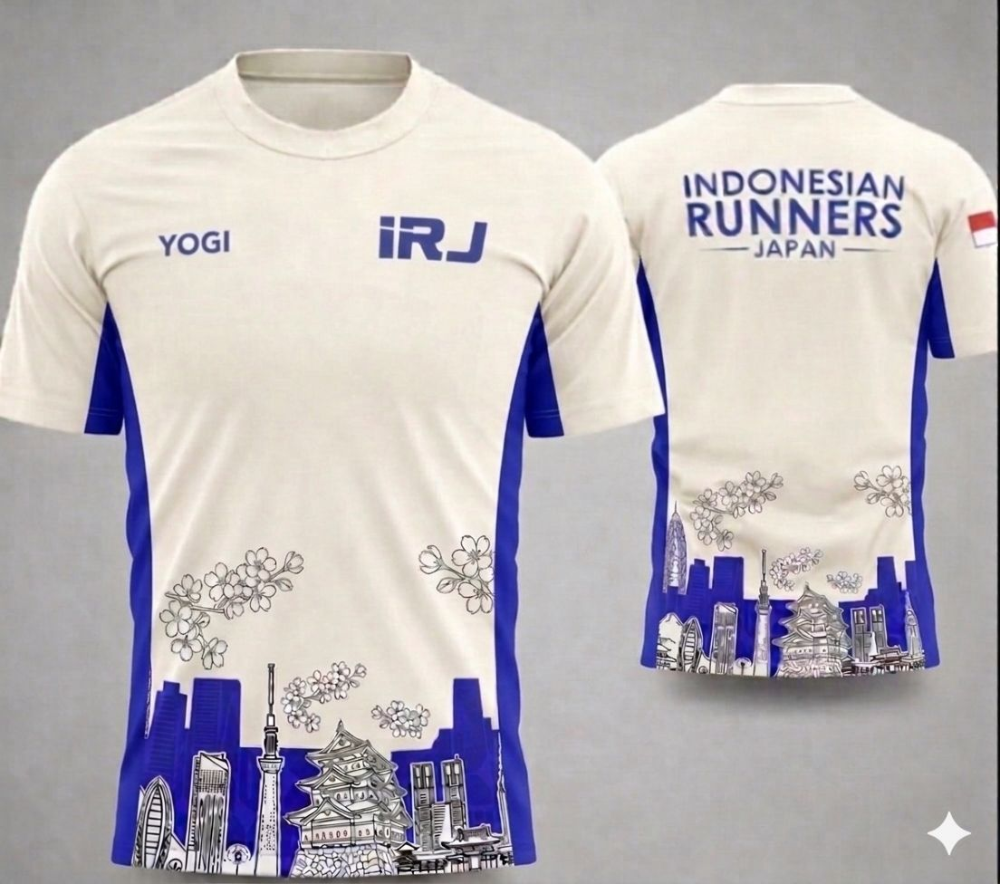
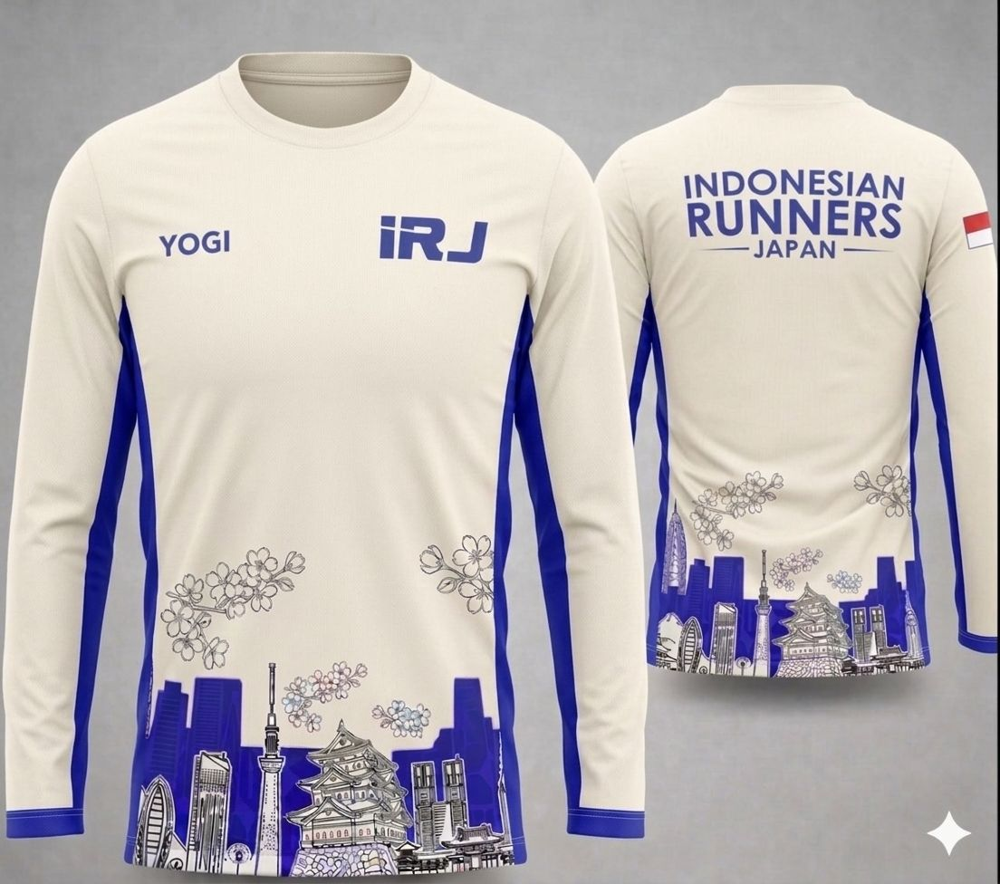
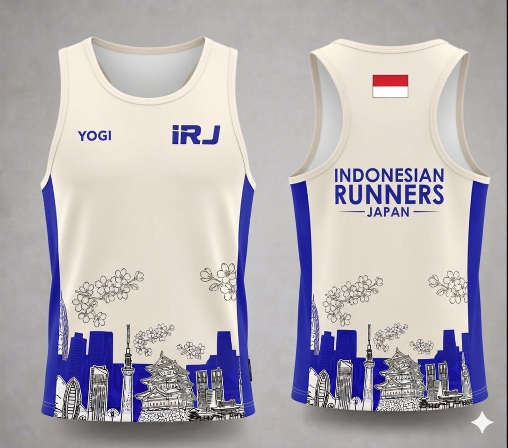
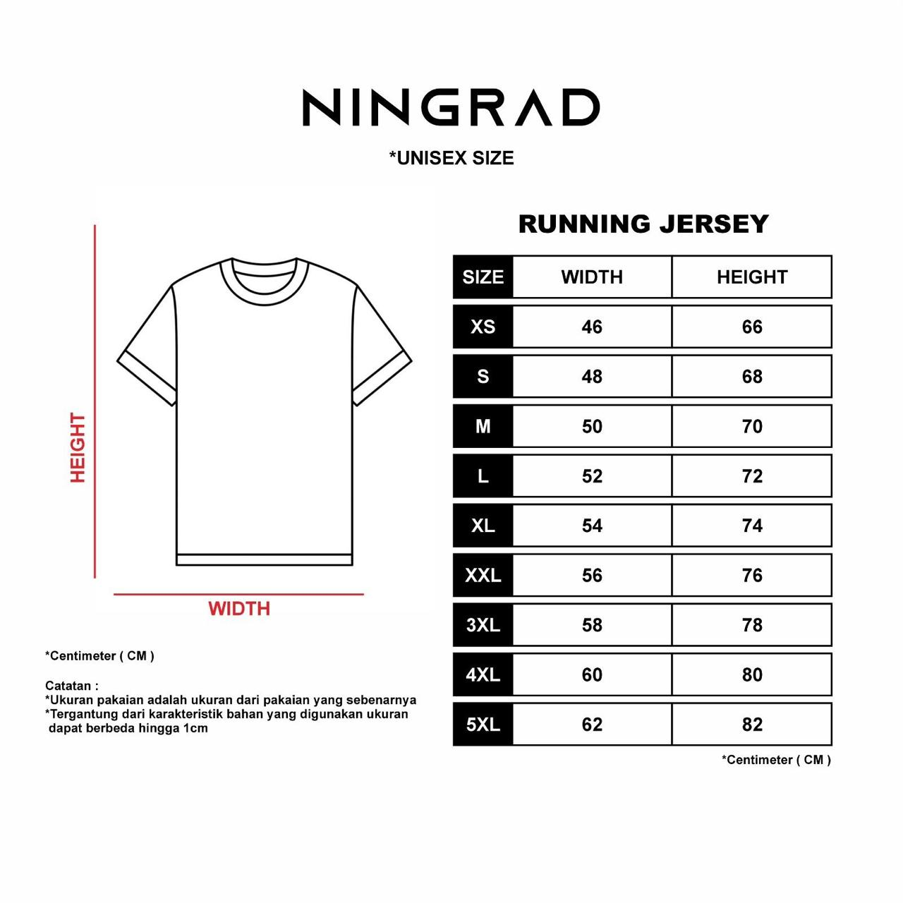
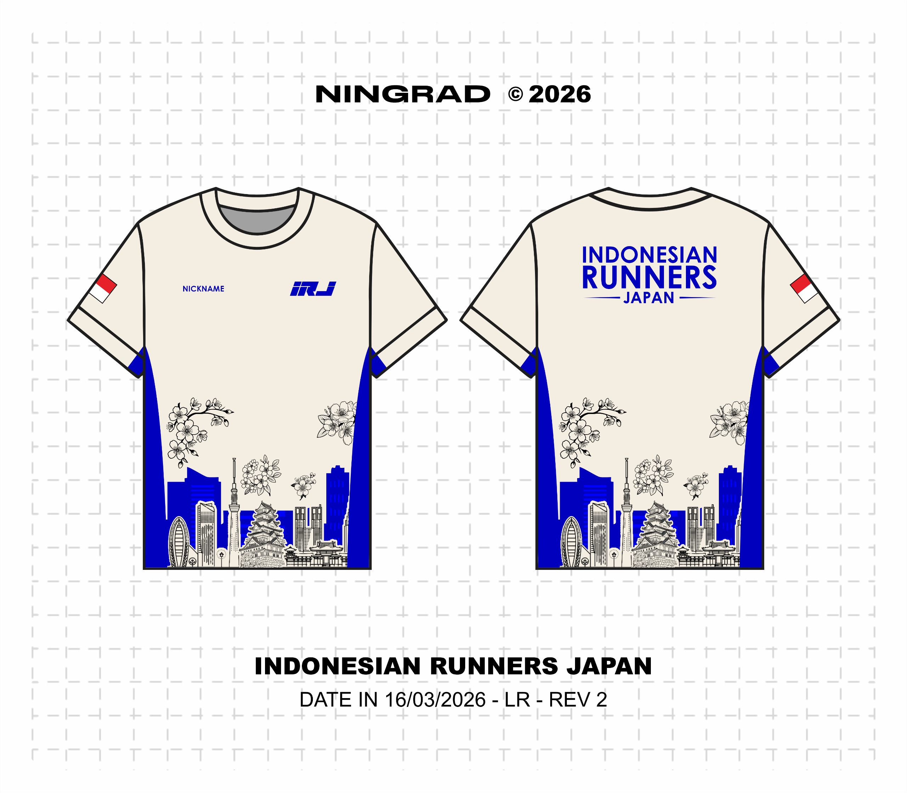
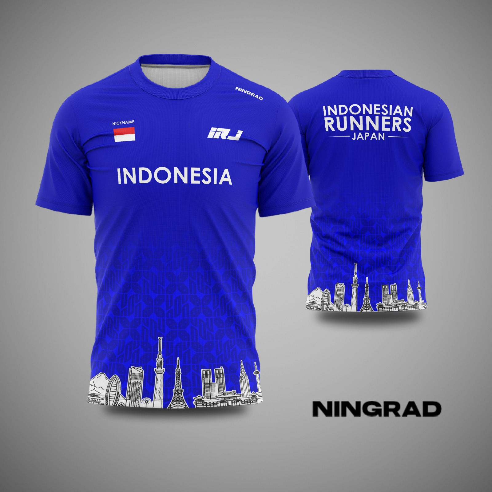
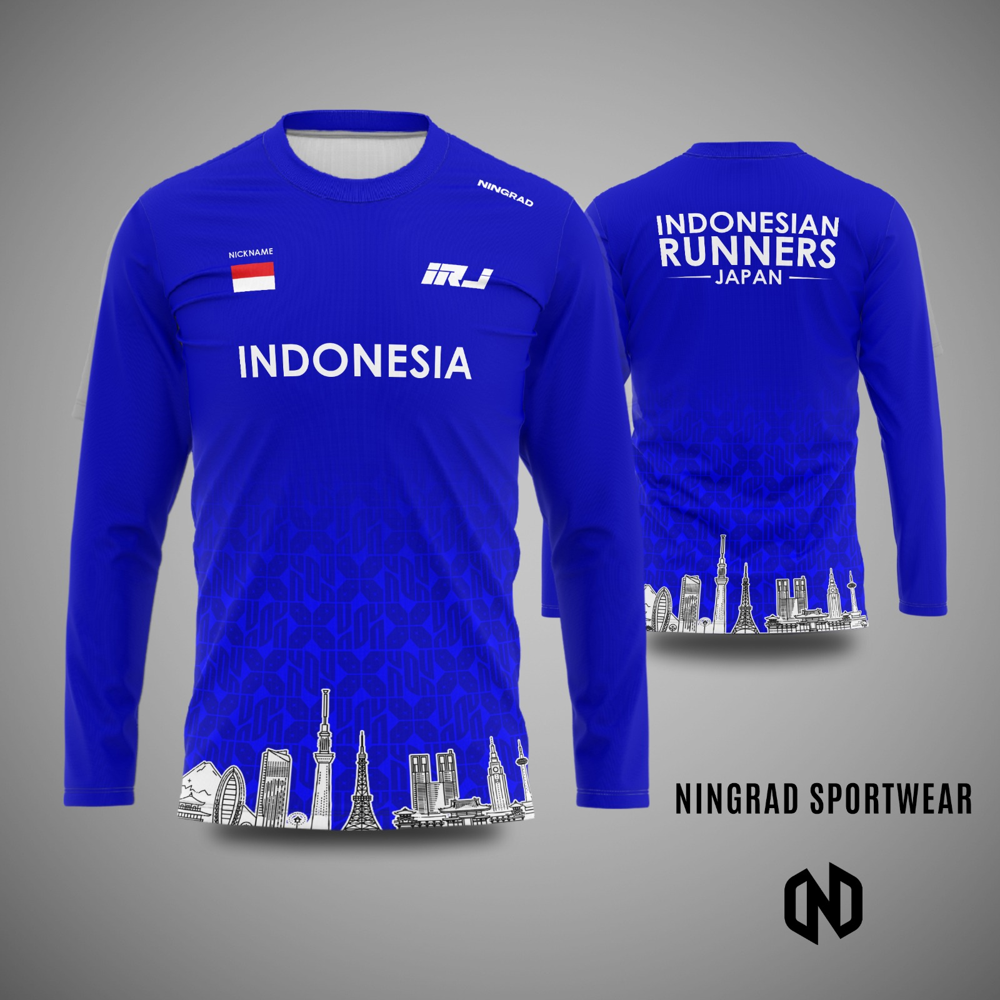
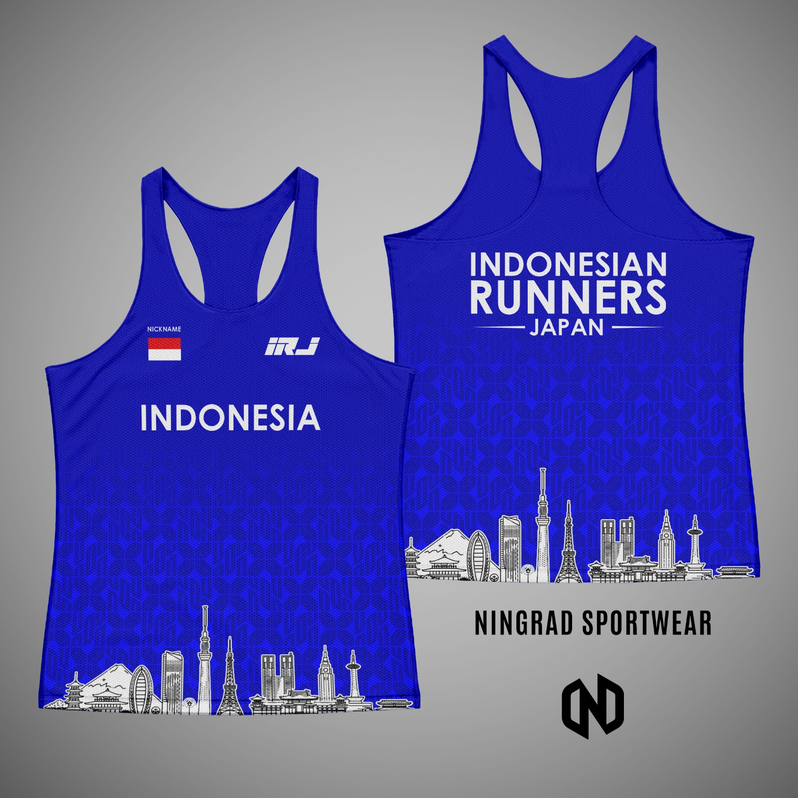

Jersey Official IRJ
Identitas Kami di Lintasan
Jersey Indonesian Runners Japan bukan sekadar pakaian olahraga. Ini adalah simbol semangat kebersamaan di setiap langkah lari kita di Jepang. Jersey ini dirancang agar kita mudah mengenali satu sama lain saat sedang lari bersama ataupun race besar.
Detail Desain
Desain 2026
- Warna Utama: Putih Tulang
- Filosofi: Ikon kota-kota Jepang dimana cabang-cabang IRJ berada dihiasi bunga-bunga sakura, dengan identitas Indonesian Runners Japan di punggung. Logo IRJ v1 di dada sebelah kiri dan nama member di sebelah kanan serta bendera Indonesia di lengan sebelah kanan.





Desain 2025
- Warna Utama: Biru
- Filosofi: Ikon kota-kota Jepang dimana cabang-cabang IRJ berada, dengan identitas INDONESIA di dada dan nama Indonesian Runners Japan di punggung. Logo IRJ v1 di dada sebelah kiri dan bendera Indonesia serta nama member di sebelah kiri.



Cara Mendapatkan
Jersey ini diproduksi secara terbatas melalui sistem Pre-Order berkala. Pantau terus grup WhatsApp cabang atau Instagram @runnerjapan01 untuk informasi pembukaan PO selanjutnya!